Токио · Тёфу · ресторан
Maruta в Тёфу: ресторан, где всё готовят на дровах из того, что растёт рядом
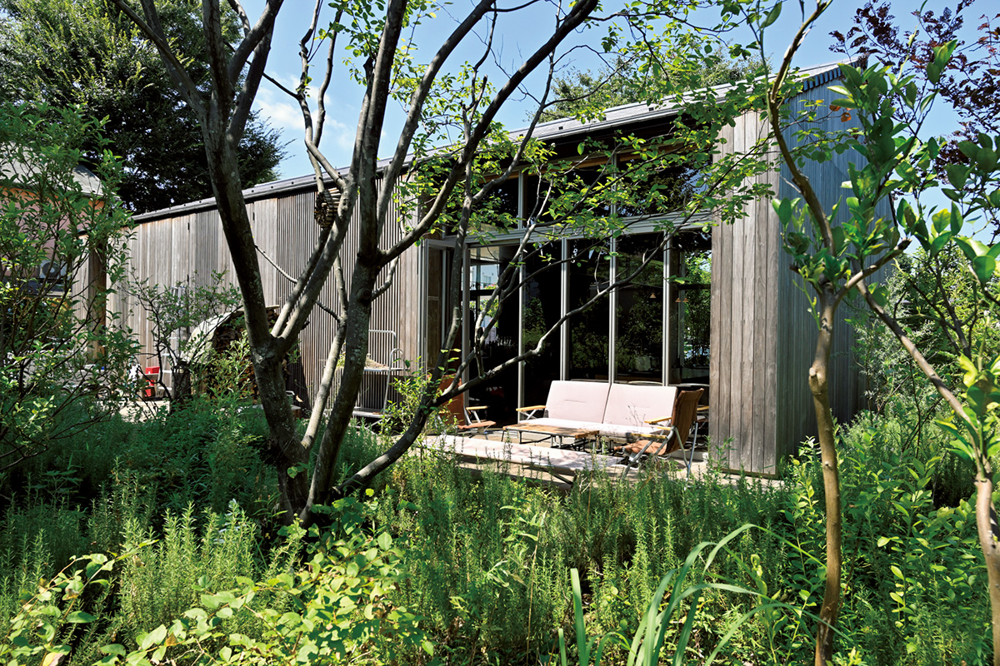
На западе Токио, в районе Дзиндайдзи, есть ресторан, о котором шеф-повара во всём мире могли бы только мечтать: отдельный дом, гриль на дровах и свой огород за кухней. Его девиз «Токио, местное прежде всего».
Место
Дом у ботанического сада
От станции Тёфу до Maruta около 15 минут на автобусе. Ресторан занимает отдельный дом на участке рядом с ботаническим садом, в районе Дзиндайдзи.
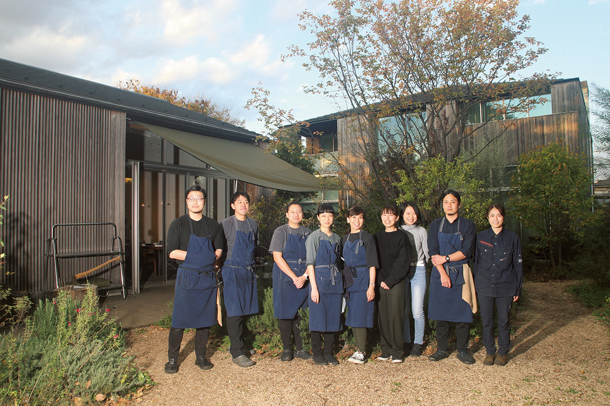
Maruta открылся в 2018 году и сразу привлёк внимание своей идеей «Токио, местное прежде всего». Продукты по возможности берут у соседей. Готовят просто, на огне из дров. Гости садятся за большие общие столы и делят на всех цельный кусок мяса. Такой стиль есть только здесь.
За большой дверью открывается зал с потолком высотой 5 метров. В нём открытая кухня и три длинных стола, каждый по 5,5 метра, а у стены пылает гриль на дровах. Этого уже достаточно для роскоши, но шеф-повар Кадзуки Исимацу с гордостью ведёт гостей во двор. Огород на первый взгляд выглядит как буйные заросли, но так и задумано: здесь растят овощи по методу синэкокультуры, когда растения разных видов сажают вперемешку и дают им расти почти как в дикой природе.
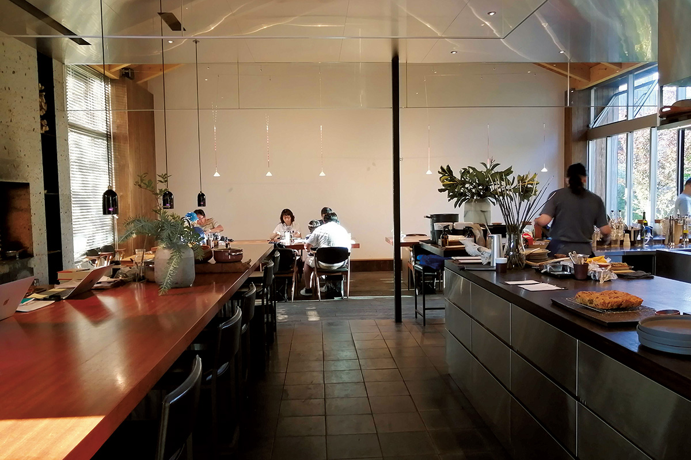
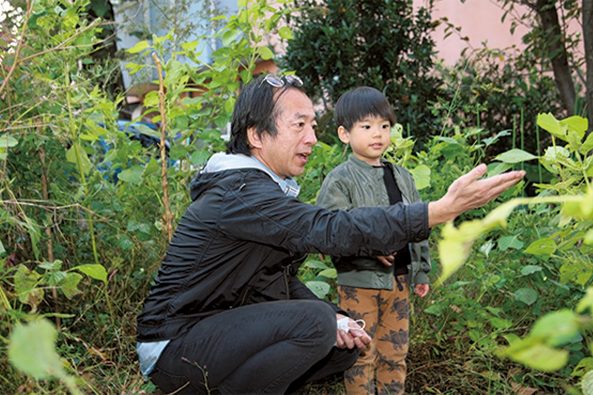
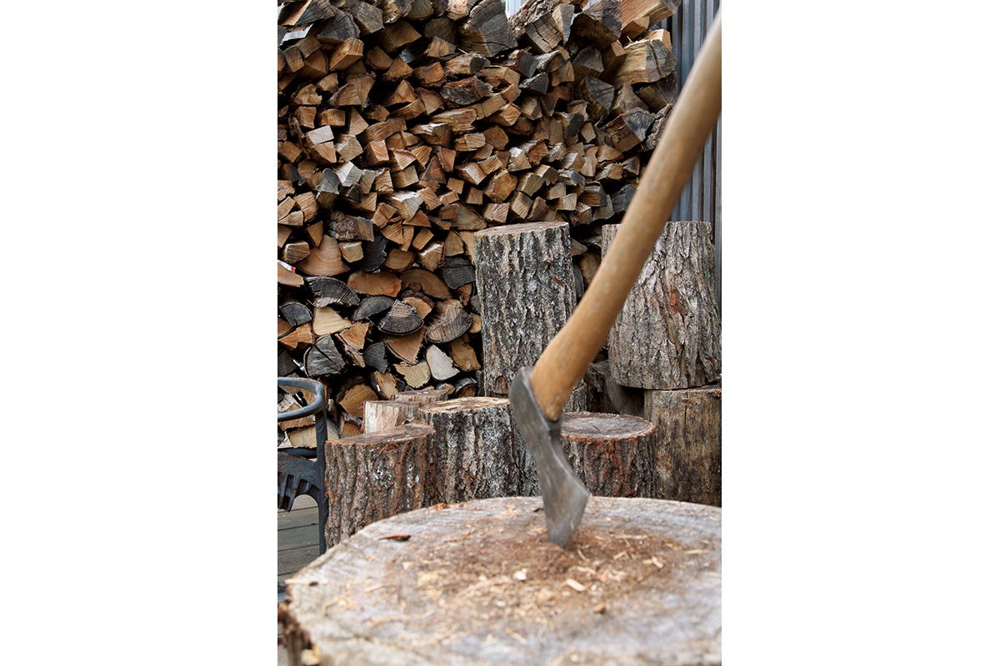
2020 год
Ближе к соседям, без мусора
Весной 2020 года из-за эпидемии ресторан закрылся на два месяца и в июне открылся снова. Гости издалека отменяли брони одну за другой, зато стали приходить местные жители, и это тронуло команду.
«Мы поняли, что ресторан должен быть удобен прежде всего соседям»
шеф-повар Кадзуки Исимацу
Раньше и днём, и вечером здесь подавали только курс, и все гости за столом начинали трапезу одновременно. С июня 2020 года ресторан оставил один курс за 10 000 иен и расширил меню отдельных блюд. Тогда же команда поставила цель до 31 декабря 2021 года перестать производить мусор. Руководителем проекта стал сотрудник по связям с публикой, а образцом выбрали хельсинкский ресторан Nolla, известный тем, что работает без отходов.
Курс
Девять блюд одного дня
В дорогих ресторанах центра Токио обычно подают только курс на усмотрение шефа, и вместе с напитками ужин обходится примерно в 30 000 иен на человека. В Maruta раньше курс стоил 7000 иен днём и 12 000 иен вечером, а после обновления остался один, за 10 000 иен (цены 2021 года). Каждое из девяти блюд строится вокруг сезонного продукта, и в дело идут части, которые обычно выбрасывают: кожура, стебли, цветки и листья. Так кухня приближается к цели без мусора, а гости заново открывают вкус привычных овощей.
Первой подают радужную форель из Фудзиномии в префектуре Сидзуока. Внизу лежат чипсы из её высушенной и обжаренной кожи, сверху крем с ароматом дыма от дров, ломтики рыбы, цветки фенхеля и кинзы, пикули и зернистая горчица. Дрова здесь нужны не только для жарки, но и для аромата.
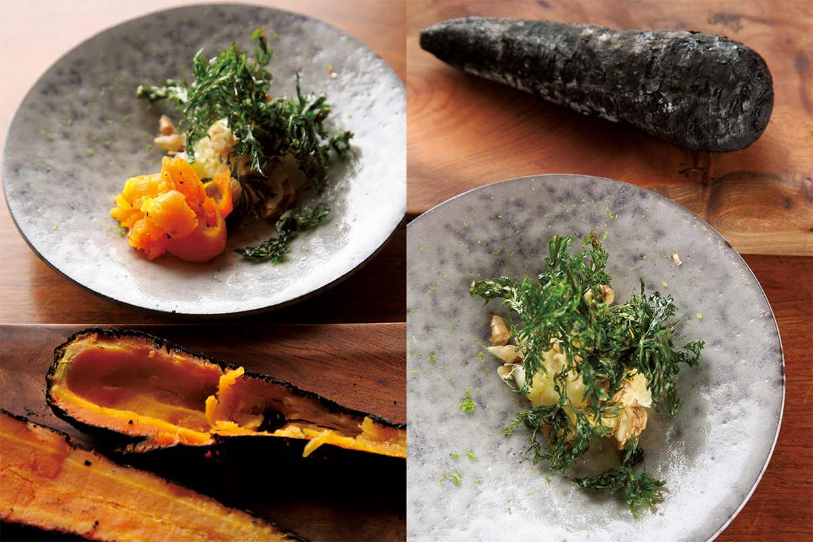
Следом идёт морской окунь кинмэдай с острова Ниидзима, который тоже относится к Токио. Утром рыбу отправляют с острова, днём она прилетает в аэропорт Тёфу, а через 15 минут на машине уже лежит на кухне. Шеф любит её за жирность, ведь это глубоководная рыба. Её подают на пару с бульоном из обжаренных костей, пюре из репы, веточками кустарника куромодзи и тайваньским перцем макао. Об острове Ниидзима рассказывает отдельная статья.
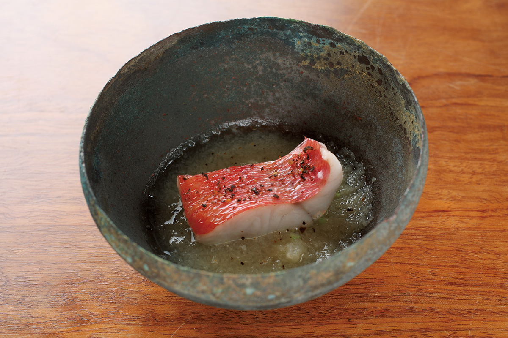
Огонь
Готовить значит управлять огнём
К ризотто приносят сковороду с раскалёнными углями. Ломтик кальмара берут щипцами, слегка обжаривают над углями и едят с чёрным рисом и ячменём, сваренными в томатном соусе с печенью кальмара. Рядом стоит бульон из ракушек с лемонграссом и цитрусом нацумикан: его подливают понемногу, чтобы вкус менялся.
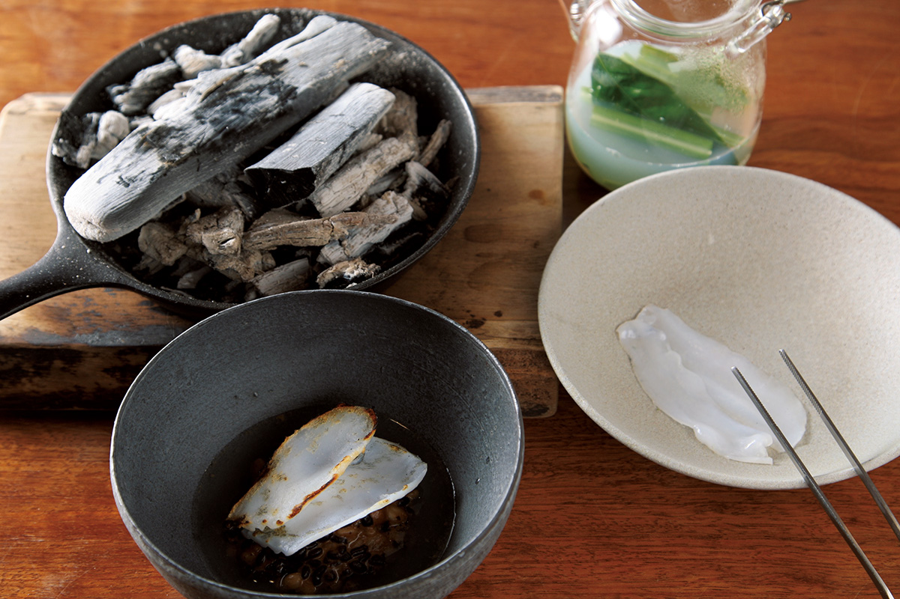
Говядина «Кандзаки» из префектуры Иватэ относится к чёрным японским коровам вагю, но без мелких прожилок жира, которыми эта порода известна. Шеф удивился, что мясо чистое на вкус и не становится жёстким на огне. В тот день подавали огузок: 100 граммов на человека в курсе и от 100 граммов за 3000 иен по меню (цены 2021 года). Фокаччу и ферментированное масло тоже делают сами.
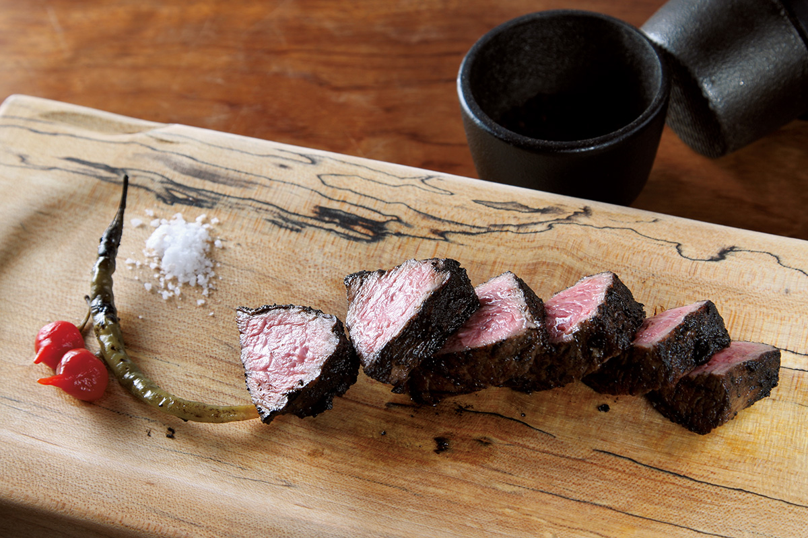
Дальше подают консоме из курицы на родниковой воде: Дзиндайдзи славится вкусной водой, и раз в неделю за ней ходят к источнику. Потом инжир с гриля, у которого корочка твердеет, а мякоть становится как варенье, с моцареллой из свежего молока фермы в Хатиодзи. Десерты не французские, а скорее японские или азиатские: агар-агар с чаем из хризантемы, маринованная японская груша. Завершают курс чаем дня, его выбирают из семи видов: тутовый лист, лист лотоса, бусенник, полынь, куромодзи, хабу и гуава.
По меню
Бургер и карри
Не обязательно приходить на курс: по меню есть простые блюда, ради которых хочется заглянуть ещё раз.
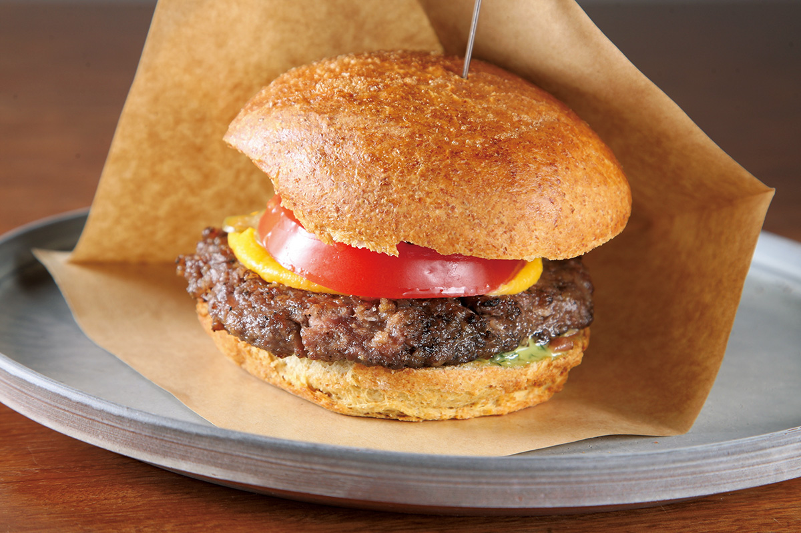
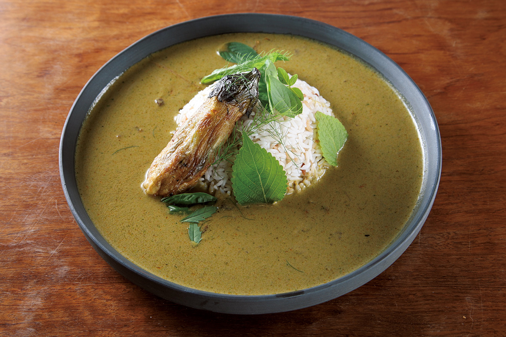
Оленина постная и без привкуса дичи. Карри не такое острое, как тайское, а состав трав каждый раз разный, поэтому одинаковым оно не бывает и меняется вместе с сезоном.
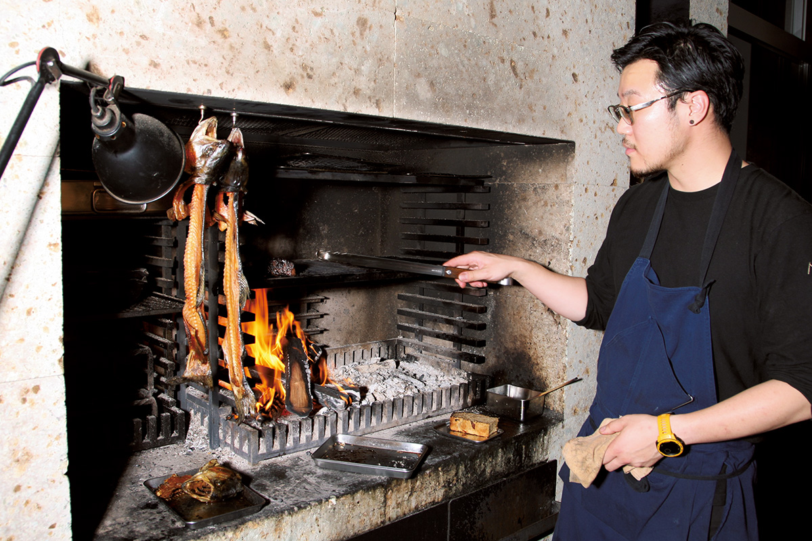
Кадзуки Исимацу родился в Токио в 1988 году. Он учился в известных французских ресторанах города, а в 27 лет уехал в Австралию. В мельбурнском ресторане Brae его поразил вкус овощей с собственного огорода, и с тех пор он хочет подавать продукты в их лучшем виде.
Maruta
- Адрес
- Токио, Тёфу, Дзиндайдзи-Китамати, 1-20-1
- Телефон
- +81 50-1720-7006 (2026 год)
- Часы работы
- обед 11:30–15:30 в субботу и воскресенье, ужин 18:00–22:00 в субботу, воскресенье и понедельник (2026)
- Выходные
- вторник, среда (2026)
- Цены / Вход
- курс от 10 000 иен, есть блюда по меню
- Сайт
- maruta.green
Фото: Мунэаки Маэда.